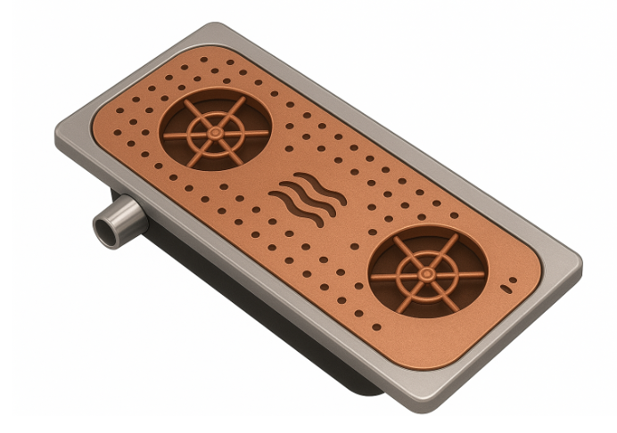

Le produit
Notre système de nettoyage intégré combine simplicité technique et efficacité. Conçu avec des matériaux durables (inox, aluminium, cuivre), il garantit hygiène et longévité.
Comment ça marche ?
Le système intègre :
- Un circuit hydraulique optimisé : pompe à eau et tuyaux de raccordement
- Un système de chauffage : résistance pour un nettoyage efficace
- Une soufflerie : séchage rapide des contenants
- Une structure durable : inox et composite aluminium-cuivre
Caractéristiques techniques
Enveloppe compacte et robuste, conçue pour s'installer près des machines à café professionnelles. Installation rapide par nos partenaires spécialisés.
Prix accessible : 100 €,
démontrant notre engagement pour une solution économiquement viable.